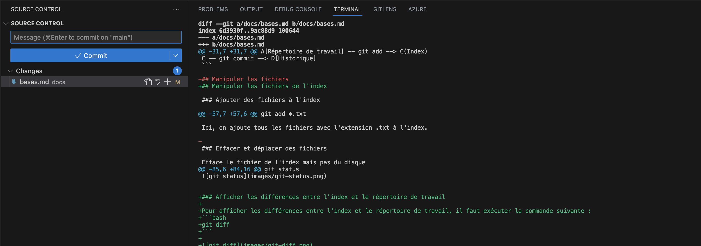

Autres commandes utiles
blame - Identifier l'auteur d'une ligne de code
Pour identifier l'auteur d'une ligne de code, il faut exécuter la commande suivante :
Cela permet de voir qui a modifié une ligne de code et à quel moment. Cela peut être utile pour identifier l'auteur d'un bug. Dans Visual Studio Code, il est possible d'afficher les informations de git blame en survolant une ligne de code.
<!-- ## chery-pick - Appliquer un commit sur une autre branche
La commande git cherry-pick permet d'appliquer un commit d'une branche sur une autre branche. Cette commande est utile pour appliquer un commit sur une branche sans fusionner la branche.
Le cherry-pick est un outil puissant mais qui peut être dangereux. Il est donc important de bien comprendre son fonctionnement avant de l'utiliser.
Elle possède de nombreux cas d’usages : appliquer une modification commitée sur une mauvaise branche, récupérer un bugfix depuis une branche pour l’appliquer à une autre…
Pour utiliser la commande git cherry-pick, il faut se placer sur la branche sur laquelle on souhaite appliquer le commit. Il faut ensuite utiliser la commande git cherry-pick suivie du hash du commit à appliquer.
Cette commande applique le commit 5f4a4b2 sur la branche courante. Le commit 5f4a4b2 n'est pas supprimé de la branche d'origine. Il est donc possible de l'appliquer sur plusieurs branches.
gitGraph
commit
branch develop
commit
checkout main
commit
checkout develop
commit id:"3-5f4a4b2"
checkout main
commit
cherry-pick id:"3-5f4a4b2"
commit
checkout develop
commit
``` -->
## diff - Afficher les différences
Pour afficher les différences entre l'index et le répertoire de travail, il faut exécuter la commande suivante :
```bash
git diff
Il est possible d'afficher les différences entre l'index et le répertoire de travail pour un fichier en particulier avec la commande suivante :
Il est possible de voir ces différences directement dans l'ide. Par exemple, avec Visual Studio Code, il suffit de cliquer sur le fichier dans l'onglet source control.

Pour afficher les différences entre l'index et le dernier commit, il faut exécuter une des commandes suivantes :
Pour afficher les différences entre deux commits, il faut exécuter la commande suivante :
Par exemple pour afficher la différence entre le dernier commit et l'avant dernier commit, il faut exécuter la commande suivante :
log - Afficher l'historique des commits
Pour afficher l'historique des commits, il faut exécuter la commande suivante :
Il est possible de filtrer l'historique des commits avec différentes options.
Par exemple, pour afficher les 3 derniers commits, on peut exécuter la commande suivante :
Pour afficher les commits d'une période :
Pour afficher les commits d'un fichier :
Les options de filtrage peuvent être combinées. Par exemple, pour afficher les 3 derniers commits d'un utilisateur sur un fichier :
reset - Annuler un commit
Il est possible d'annuler le dernier commit avec la commande suivante :
Si l'on souhaite annuler le dernier commit et supprimer les fichiers de l'index, il faut exécuter la commande suivante :
Le caractère ^ signifie le commit précédent. Il est possible d'annuler plusieurs commits en ajoutant plusieurs ^. Il est aussi possible d'utilisé le charactère ~ pour annuler plusieurs commits. Par exemple, pour annuler les 3 derniers commits, il faut exécuter la commande suivante :
revert - Annuler un commit publié
Il est possible d'annuler un commit publié avec la commande suivante :
stash - Mettre de côté des modifications
La commande git stash permet de sauvegarder les modifications en cours de développement. Cette commande est utile pour sauvegarder les modifications en cours de développement sans avoir à créer une branche.
Pour utiliser la commande git stash, il faut se placer sur la branche sur laquelle on souhaite sauvegarder les modifications. Il faut ensuite utiliser la commande git stash.
Il est possible de donner un nom à la modification sauvegardée en utilisant l'option -m, afin de pouvoir la retrouver plus facilement.
Cette commande sauvegarde les modifications en cours de développement. Les modifications sont sauvegardées dans une pile. Il est possible de sauvegarder plusieurs modifications.
Pour lister les modifications sauvegardées, il suffit d'utiliser la commande git stash list.
Pour appliquer une modification sauvegardée, il suffit d'utiliser la commande git stash apply suivie du numéro de la modification ou de son nom.
Cette commande applique la modification stash@{0} sur la branche courante. La modification stash@{0} n'est pas supprimée. Il est donc possible de l'appliquer sur plusieurs branches.
Pour supprimer une modification sauvegardée, il suffit d'utiliser la commande git stash drop suivie du numéro de la modification.
Il est aussi possible de supprimer toutes les modifications sauvegardées en utilisant la commande git stash clear.
tag - Marquer un commit
Les tags permettent de marquer un commit. Ils sont utiles pour marquer les versions d'un projet. Ils sont, par exemple, très utiles pour marquer les versions de production.
Pour créer un tag, il suffit d'utiliser la commande git tag suivie du nom du tag et du hash du commit à marquer.
Cette commande crée un tag nommé v1.0.0 sur le commit 5f4a4b2.
L'option -m permet de donner un nom au tag.
Pour lister les tags, il suffit d'utiliser la commande git tag.
Cette commande affiche la liste des tags du projet.
gitGraph
commit
commit id: "2-5f4a4b2" tag: "v1.0.0"
commit
commit tag: "v1.1.0"
commit
commit tag: "v2.0.0"
commit